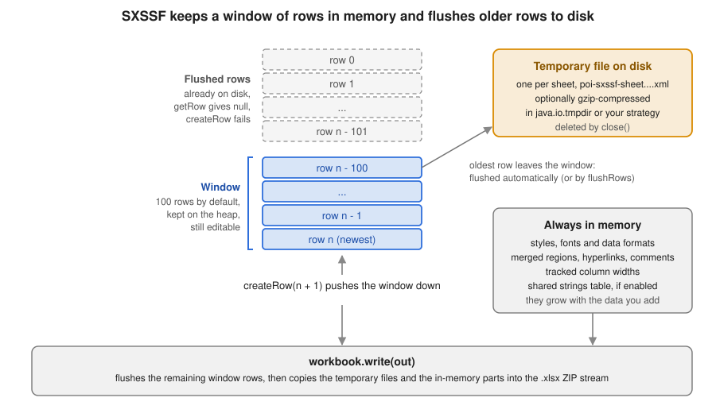

Streaming Writes with SXSSF
|
This content was generated with the assistance of AI and should be verified against the official documentation before being relied on in production. |
Baseline date: 2026-10-09. This page was written against Apache POI 5.5.1 (the latest release on that date; the 6.0
line is announced but has not been released, so every 6.0 remark below is an expectation, not a fact), Java 21 and
later. SXSSF is the streaming, write-only variant of the XSSF usermodel API. It is the tool for the
loans-report.xlsx of the Bookshelf scenario: an export of every loan the library has ever made, which is far too
large to build as a normal XSSFWorkbook. The page explains how SXSSF works, shows every option it offers, and is
frank about what you give up in exchange for a flat memory profile.
The page assumes the usermodel basics of
Spreadsheet Usermodel Basics and the style rules of
Cell Styles, Fonts & Formats (they matter even more here).
The component and its jar are introduced in
Introduction & Architecture. Reading large files is the
mirror problem, solved in Streaming Reads: Event &
SAX APIs. SXSSF lives in poi-ooxml (package org.apache.poi.xssf.streaming), so the dependency is the same as for
XSSF.
Why XSSF runs out of memory
XSSFWorkbook is a complete in-memory model of the file. Every sheet is parsed into (or built as) a tree of XMLBeans
objects: one object per row, one per cell, plus style and string bookkeeping. That tree is much larger than the
finished file, which is a compressed ZIP of XML. The memory is held until the workbook is garbage collected, and
write additionally serialises the whole tree.
The cost is easy to measure. This test (the code is a loop that creates rows with five cells each, two numeric and three short strings) was run on 2026-10-09 with POI 5.5.1 and a heap limited to 128 MB:
| Workbook | Rows x cells | Result with -Xmx128m |
|---|---|---|
|
300,000 x 5 |
|
|
300,000 x 5 |
Completes; about 30 MB of heap in use at the end |
The numbers are indicative, not a benchmark: they depend on string lengths, styles and the JVM. The shape is what matters. XSSF memory grows linearly with the number of cells; SXSSF memory is bounded by the window size plus the parts that stay in memory (see What stays in memory). A server that exports on request can therefore size its heap by the number of concurrent exports instead of by the largest possible export.
The idea is old. SXSSF was introduced in POI 3.8 as an extension of XSSF that "can be used to write very large files". The official Spreadsheet How-To documents it, and states the same trade-off used throughout this page: it is write-only, and only a sliding window of rows can be accessed at any time.
How SXSSF works
SXSSF does not build a sheet tree. As you create rows it keeps only the most recent ones as lightweight objects. When a
row falls out of the window, SXSSF serialises it to SpreadsheetML text and appends it to a temporary file, one per sheet.
At write time the temporary file is copied, as the sheetData element, into the .xlsx ZIP that goes to your
OutputStream, together with the remaining window rows and the parts that were kept in memory (workbook, styles,
merged regions, hyperlinks, comments, and so on).

Three consequences follow, and they explain nearly every limitation described later:
-
A row is written once, in order. SXSSF is a forward-only writer: you must create rows in ascending row-number order and finish a row before the window moves past it.
-
A row that was flushed is gone from the Java side.
getRowreturnsnullfor it andcreateRowfor it fails. -
Anything that spans rows (merged regions, hyperlinks, comments, validations) is not part of the row stream and stays in memory until
write.
The life of an export looks like this:
Creating an SXSSFWorkbook
The constructors decide the window, whether temporary files are compressed and how strings are stored.
| Constructor | Meaning |
|---|---|
|
A new empty workbook with the default window of 100 rows ( |
|
As above with your window. |
|
Starts from an existing workbook: its sheets stay in memory and are written as they are, and only sheets you add are streamed. See SXSSF and templates. |
|
Template plus window. |
|
Also chooses whether the temporary files are gzip-compressed. |
|
Also chooses shared strings instead of inline strings. Pass |
|
A subclass that generates rows at |
The window default of 100 comes from the constant SXSSFWorkbook.DEFAULT_WINDOW_SIZE; the narrative guide does not
state the number, the Javadoc does. The workbook-level setters that complete the picture are:
| Method | Effect |
|---|---|
|
Gzip-compress the temporary files. Trades CPU time for less disk space. Default off. |
|
Controls when ZIP64 extensions are used in the output archive (the commons-compress |
|
Whether the |
|
The underlying |
|
Writes the file. It does not close the workbook. |
|
Experimental alternative, see Temporary files. |
|
Closes the workbook and deletes the temporary files (POI 5.3.0 and later; see Temporary files). |
|
Deprecated in 5.5.1: |
A first export: loans-report.xlsx
The first example writes the large export of the scenario. Notice what happens before the row loop: the fonts and the three cell styles are created once and reused by reference. Creating a style per cell is a mistake in XSSF and an even worse one here, because styles are exactly the thing SXSSF keeps in memory (and Excel caps them at 64,000 per workbook).
import java.io.IOException;
import java.io.OutputStream;
import java.nio.file.Files;
import java.nio.file.Path;
import java.time.LocalDate;
import org.apache.poi.ss.usermodel.Cell;
import org.apache.poi.ss.usermodel.CellStyle;
import org.apache.poi.ss.usermodel.CreationHelper;
import org.apache.poi.ss.usermodel.Font;
import org.apache.poi.ss.usermodel.Row;
import org.apache.poi.xssf.streaming.SXSSFSheet;
import org.apache.poi.xssf.streaming.SXSSFWorkbook;
public class LoansReport {
record Loan(long id, String isbn, String member, LocalDate loanedOn, double fee) { }
public static void main(String[] args) throws IOException {
int rows = 300_000;
try (SXSSFWorkbook workbook = new SXSSFWorkbook(100)) {
workbook.setCompressTempFiles(true);
CreationHelper helper = workbook.getCreationHelper();
Font bold = workbook.createFont();
bold.setBold(true);
CellStyle headerStyle = workbook.createCellStyle();
headerStyle.setFont(bold);
CellStyle dateStyle = workbook.createCellStyle();
dateStyle.setDataFormat(helper.createDataFormat().getFormat("yyyy-mm-dd"));
CellStyle feeStyle = workbook.createCellStyle();
feeStyle.setDataFormat(helper.createDataFormat().getFormat("#,##0.00"));
SXSSFSheet sheet = workbook.createSheet("Loans");
sheet.trackColumnForAutoSizing(1);
sheet.trackColumnForAutoSizing(2);
Row header = sheet.createRow(0);
String[] titles = {"Loan", "ISBN", "Member", "Loaned on", "Fee"};
for (int c = 0; c < titles.length; c++) {
Cell cell = header.createCell(c);
cell.setCellValue(titles[c]);
cell.setCellStyle(headerStyle);
}
sheet.createFreezePane(0, 1);
for (int i = 1; i <= rows; i++) {
Loan loan = new Loan(i, "97801404" + (10000 + i % 5000), "member-" + (i % 800),
LocalDate.of(2026, 1, 1).plusDays(i % 270), (i % 40) * 0.25);
Row row = sheet.createRow(i);
row.createCell(0).setCellValue(loan.id());
row.createCell(1).setCellValue(loan.isbn());
row.createCell(2).setCellValue(loan.member());
Cell date = row.createCell(3);
date.setCellValue(loan.loanedOn());
date.setCellStyle(dateStyle);
Cell fee = row.createCell(4);
fee.setCellValue(loan.fee());
fee.setCellStyle(feeStyle);
}
sheet.autoSizeColumn(1);
sheet.autoSizeColumn(2);
try (OutputStream out = Files.newOutputStream(Path.of("loans-report.xlsx"))) {
workbook.write(out);
}
}
}
}Points worth noticing in the example:
-
The
SXSSFWorkbookis in a try-with-resources block, soclose()always runs and removes the temporary files, even when the loop throws. -
trackColumnForAutoSizingis called before any row is written, andautoSizeColumnafter the last one. See Auto-sizing columns. -
The output goes to an
OutputStream. Here it is a file; in a web application it is the response (see Streaming to an HTTP response). -
createFreezePane, like the other sheet-level view settings, is written when the file is written and does not depend on rows. -
Row,Cell,CellStyleandFontare the commonss.usermodelinterfaces, so the row-writing code can be shared with an XSSF implementation for small exports.
The window and flushing
The window is the number of most recent rows that stay accessible. Its default, 100, is a good starting point: bigger windows cost memory without benefit unless you revisit old rows.
Automatic flushing
With a positive window size, SXSSF flushes automatically. Each time you call createRow and the number of rows in
memory exceeds the window, the oldest rows are written to the temporary file. You do not call anything. This is the
mode of the example above and the right default for exports driven by a loop or a database cursor.
Manual flushing
If you pass -1 as the window size, automatic flushing is disabled and the number of rows kept is unlimited. You then
decide when to flush with SXSSFSheet.flushRows(int remaining): it writes every row except the last remaining
rows to disk. flushRows() without an argument flushes everything. Manual flushing is useful when the rows to keep
depend on your data (for example, a group of rows that must stay editable until a subtotal row is added) rather than on
a fixed count.
import java.io.IOException;
import java.io.OutputStream;
import java.nio.file.Files;
import java.nio.file.Path;
import org.apache.poi.ss.usermodel.Row;
import org.apache.poi.xssf.streaming.SXSSFSheet;
import org.apache.poi.xssf.streaming.SXSSFWorkbook;
public class ManualFlush {
public static void main(String[] args) throws IOException {
try (SXSSFWorkbook workbook = new SXSSFWorkbook(-1)) {
SXSSFSheet sheet = workbook.createSheet("Loans");
for (int i = 0; i < 200_000; i++) {
Row row = sheet.createRow(i);
row.createCell(0).setCellValue(i);
row.createCell(1).setCellValue("loan-" + i);
if (i > 0 && i % 5_000 == 0) {
sheet.flushRows(1_000);
}
}
System.out.println("last flushed row: " + sheet.getLastFlushedRowNum());
try (OutputStream out = Files.newOutputStream(Path.of("loans-report-manual.xlsx"))) {
workbook.write(out);
}
}
}
}This prints last flushed row: 194000: when row 195,000 was created, flushRows(1_000) kept rows 194,001 to 195,000 in
memory and wrote the rest.
With -1 and no flushRows calls nothing is ever flushed and memory use grows exactly as with XSSF. A forgotten flush
is a quiet way to bring the out-of-memory problem back.
The sheet-level window
The window size is stored per sheet: the workbook value is copied into every sheet when it is created, and
SXSSFSheet.setRandomAccessWindowSize(int) changes it for one sheet afterwards. The argument must be positive or -1;
anything else is rejected. SXSSFWorkbook.getRandomAccessWindowSize() returns the workbook default. Changing the
window of a sheet that already has rows does not bring back rows that were flushed.
The flushing API
| Method | Behaviour |
|---|---|
|
Flushes all rows except the last |
|
Flushes all rows. Rows created afterwards are fine, as long as their numbers are higher than the last flushed one. |
|
The highest row number already written, or -1 if nothing was flushed. |
|
|
|
Forces the buffered data of the temporary file writer to disk. It does not move rows out of the window. |
|
Changes the window of this sheet. |
What you can still do with a row
The next program makes the window visible. It uses a window of 10 rows and creates 25 rows.
import java.io.IOException;
import org.apache.poi.ss.usermodel.Row;
import org.apache.poi.xssf.streaming.SXSSFSheet;
import org.apache.poi.xssf.streaming.SXSSFWorkbook;
public class WindowBehaviour {
public static void main(String[] args) throws IOException {
try (SXSSFWorkbook workbook = new SXSSFWorkbook(10)) {
SXSSFSheet sheet = workbook.createSheet("Loans");
for (int i = 0; i < 25; i++) {
sheet.createRow(i).createCell(0).setCellValue(i);
}
System.out.println("last flushed row: " + sheet.getLastFlushedRowNum());
System.out.println("row 3 (flushed): " + sheet.getRow(3));
Row inWindow = sheet.getRow(20);
System.out.println("row 20 (in window): " + (inWindow != null));
inWindow.getCell(0).setCellValue(2000);
try {
sheet.createRow(3);
} catch (IllegalArgumentException e) {
System.out.println("createRow(3) failed: " + e.getMessage());
}
}
}
}last flushed row: 14
row 3 (flushed): null
row 20 (in window): true
createRow(3) failed: Attempting to write a row[3] in the range [0,14] that is already written to disk.Rows 0 to 14 were flushed when row 24 was created (the window keeps rows 15 to 24, ten rows). Row 20 can still be read and changed; row 3 can neither be read nor recreated.
Source: SXSSFSheet, POI Javadoc
What you can and cannot do
SXSSF implements the same ss.usermodel interfaces as XSSF, so most code compiles unchanged, but several operations
are impossible by design. The behaviour below was checked against POI 5.5.1.
| Operation | Behaviour in SXSSF |
|---|---|
Create rows in ascending order |
Supported. Row numbers may skip values, but must be higher than the last flushed row. |
Read or change a row inside the window |
Supported through |
Read or change a flushed row |
Not possible: |
Read an existing file |
Not supported. SXSSF only writes. To read a large file, use the event API of Streaming Reads. |
|
Only for rows still in the window. |
|
Throw |
Sheet-level views (freeze and split panes, zoom, tab colour) |
Supported; written at the end. |
Auto-filter, print setup, header and footer, page breaks, repeating rows and columns |
Supported; written at the end. |
Data validation, conditional formatting |
Supported through |
Pictures and drawings |
|
Excel tables ( |
No table or pivot API exists on |
Formula evaluation |
Not possible over flushed rows. See Formulas. |
Several threads writing one workbook |
Not supported. The writer is sequential and the objects are not thread-safe. |
What stays in memory
The memory profile of SXSSF is "window plus these", and the "these" part is the one that surprises people:
Kept in memory until write |
Why it matters |
|---|---|
Cell styles, fonts and data formats |
Created through the workbook, so they live in the underlying |
Merged regions |
One |
Hyperlinks and cell comments |
Held by the sheet and written after |
Data validations, conditional formats, auto-filter |
Small and independent of the row count, as long as you add a few ranges and not one per row. |
Column widths and the tracked columns for auto-sizing |
Width values are small; the tracking data is explained below. |
Shared strings table (only if enabled) |
One entry per distinct string. For a free-text column of millions of values it can reach hundreds of megabytes. |
Defined names, workbook properties, pictures |
Part of the |
The following example uses most of the features that stay in memory (merged title, validation, auto-filter, freeze pane,
hyperlink, comment and a totals formula) on a sheet that still streams, and verifies cleanly when re-opened with
XSSFWorkbook.
import java.io.IOException;
import java.io.OutputStream;
import java.nio.file.Files;
import java.nio.file.Path;
import org.apache.poi.common.usermodel.HyperlinkType;
import org.apache.poi.ss.usermodel.ClientAnchor;
import org.apache.poi.ss.usermodel.Comment;
import org.apache.poi.ss.usermodel.CreationHelper;
import org.apache.poi.ss.usermodel.DataValidation;
import org.apache.poi.ss.usermodel.DataValidationConstraint;
import org.apache.poi.ss.usermodel.DataValidationHelper;
import org.apache.poi.ss.usermodel.Drawing;
import org.apache.poi.ss.usermodel.Hyperlink;
import org.apache.poi.ss.usermodel.Row;
import org.apache.poi.ss.util.CellRangeAddress;
import org.apache.poi.ss.util.CellRangeAddressList;
import org.apache.poi.xssf.streaming.SXSSFCell;
import org.apache.poi.xssf.streaming.SXSSFSheet;
import org.apache.poi.xssf.streaming.SXSSFWorkbook;
public class SummaryWithFeatures {
public static void main(String[] args) throws IOException {
int lastDataRow = 20_000;
try (SXSSFWorkbook workbook = new SXSSFWorkbook(100)) {
CreationHelper helper = workbook.getCreationHelper();
SXSSFSheet sheet = workbook.createSheet("Loans");
// Title row: merged region, kept in memory until write()
Row title = sheet.createRow(0);
title.createCell(0).setCellValue("Bookshelf loans report");
sheet.addMergedRegion(new CellRangeAddress(0, 0, 0, 3));
Row header = sheet.createRow(1);
header.createCell(0).setCellValue("Loan");
header.createCell(1).setCellValue("Status");
header.createCell(2).setCellValue("Fee");
header.createCell(3).setCellValue("Catalogue");
sheet.createFreezePane(0, 2);
sheet.setAutoFilter(new CellRangeAddress(1, 1, 0, 3));
// Data validation is stored on the sheet, not on rows
DataValidationHelper validations = sheet.getDataValidationHelper();
DataValidationConstraint statuses =
validations.createExplicitListConstraint(new String[] {"ON LOAN", "RETURNED", "LOST"});
DataValidation validation =
validations.createValidation(statuses, new CellRangeAddressList(2, lastDataRow + 1, 1, 1));
sheet.addValidationData(validation);
for (int i = 0; i < lastDataRow; i++) {
Row row = sheet.createRow(i + 2);
row.createCell(0).setCellValue("loan-" + i);
row.createCell(1).setCellValue(i % 4 == 0 ? "RETURNED" : "ON LOAN");
row.createCell(2).setCellValue((i % 40) * 0.25);
}
// Hyperlink and comment on a row that is still in the window (the first rows are already flushed)
Row last = sheet.getRow(lastDataRow + 1);
SXSSFCell link = (SXSSFCell) last.createCell(3);
link.setCellValue("Open catalogue");
Hyperlink hyperlink = helper.createHyperlink(HyperlinkType.URL);
hyperlink.setAddress("https://bookshelf.example.org/catalogue");
link.setHyperlink(hyperlink);
Drawing<?> drawing = sheet.createDrawingPatriarch();
ClientAnchor anchor = helper.createClientAnchor();
anchor.setCol1(3);
anchor.setCol2(5);
anchor.setRow1(lastDataRow + 1);
anchor.setRow2(lastDataRow + 4);
Comment comment = drawing.createCellComment(anchor);
comment.setString(helper.createRichTextString("Link added after the last loan"));
link.setCellComment(comment);
// Totals: a formula is stored as text and calculated by Excel when the file is opened
Row totals = sheet.createRow(lastDataRow + 2);
totals.createCell(1).setCellValue("Total fees");
totals.createCell(2).setCellFormula("SUM(C3:C" + (lastDataRow + 2) + ")");
workbook.setForceFormulaRecalculation(true);
try (OutputStream out = Files.newOutputStream(Path.of("loans-summary.xlsx"))) {
workbook.write(out);
}
}
}
}Reading the result back with XSSFWorkbook in a throwaway check showed one merged region, one data validation, one
hyperlink, one comment, an auto-filter and the formula SUM(C3:C20002) in the last row.
Source: POI Spreadsheet Quick Guide (merged regions, hyperlinks, comments, validation and freeze panes are shown there for XSSF; the SXSSF variants use the same interfaces)
Auto-sizing columns
autoSizeColumn needs the widest cell of the column, but flushed rows are gone. SXSSF solves it by measuring each
cell as it is written, for the columns you ask it to watch:
| Method | Behaviour |
|---|---|
|
Start measuring the column. Call before writing the rows you want to be measured. |
|
Track every column. Convenient but the most expensive choice. |
|
Stop measuring and free the bookkeeping. |
|
Query the tracked columns. |
|
Sets the width from the measurements. Throws |
Tracking has a cost: every cell written to a tracked column is measured with font metrics (the same java.awt text
layout that XSSF uses), and a record of the widths is kept. Track only the columns that need fitting (text columns
such as ISBN and member, not numbers with a fixed format), and prefer fixed widths with setColumnWidth for the rest.
The font metrics also require fonts to be available on the server: in a minimal container add a font package and run
with -Djava.awt.headless=true, as for XSSF.
Rows written before trackColumnForAutoSizing was called are not measured, even if they are still in the window.
Strings: inline versus shared
SpreadsheetML can store a string either in the shared strings table (xl/sharedStrings.xml, one entry per distinct
string, with the cells holding an index) or inline in the cell. SXSSF’s default is inline strings: each text cell
carries its own text, so nothing accumulates in memory. The fourth constructor argument switches to a shared table:
import java.io.IOException;
import java.io.OutputStream;
import java.nio.file.Files;
import java.nio.file.Path;
import org.apache.poi.xssf.streaming.SXSSFSheet;
import org.apache.poi.xssf.streaming.SXSSFWorkbook;
public class SharedStrings {
public static void main(String[] args) throws IOException {
// (template, rowAccessWindowSize, compressTmpFiles, useSharedStringsTable)
try (SXSSFWorkbook workbook = new SXSSFWorkbook(null, 100, true, true)) {
SXSSFSheet sheet = workbook.createSheet("Loans");
for (int i = 0; i < 100_000; i++) {
sheet.createRow(i).createCell(0).setCellValue(i % 3 == 0 ? "RETURNED" : "ON LOAN");
}
try (OutputStream out = Files.newOutputStream(Path.of("loans-shared.xlsx"))) {
workbook.write(out);
}
}
}
}On a column with two distinct values and 100,000 rows the shared-string file written by this example was 551,267 bytes,
and each <c> element was reduced to an index into a two-entry table.
| Aspect | Inline strings (default) | Shared strings table |
|---|---|---|
Memory |
Constant; nothing accumulates |
One entry per distinct string; grows with the variety of the data |
File size |
Larger when the same text repeats a lot (it is repeated per cell) |
Smaller for repetitive columns such as status or category |
Compatibility |
Excel, LibreOffice and POI read it fine, but some third-party consumers and older tools expect shared strings |
Universally supported |
Choose it for |
Free text, unique IDs, mostly distinct values, or when memory is the limit |
Columns with few distinct values and a consumer that insists on shared strings |
The Spreadsheet How-To describes this choice as "inline strings or shared strings", with inline the default for streaming. Keep the default unless a consumer asks otherwise.
Formulas
You can write formulas with setCellFormula exactly as in XSSF. The text is stored in the cell and Excel or
LibreOffice calculates the result when the file is opened. What you cannot do is ask POI to calculate it:
-
SXSSFFormulaEvaluator(obtained fromgetCreationHelper().createFormulaEvaluator()) can evaluate only formulas whose inputs are rows still in the window. If any flushed row is involved, it throwsSXSSFFormulaEvaluator.RowFlushedException, for example "Row 0 has been flushed (rows up to 15 have been flushed), cannot evaluate all cells". This was reproduced with a window of 5 rows andSUM(A1:A20). -
Cached values are therefore not written. Call
workbook.setForceFormulaRecalculation(true)(orsheet.setForceFormulaRecalculation(true)) so Excel recalculates on open, as in the previous example. Tools that read the file without a calculation engine (many importers, previews) will see empty formula results. -
If the result must be present in the file, compute it in Java and write the number (optionally in a neighbouring cell), or use the usermodel
XSSFWorkbookwith the evaluator for small reports. The evaluator itself is covered in Formulas & Evaluation.
Temporary files
Flushed rows are written to files in the JVM temporary directory, one per sheet, named
poi-sxssf-sheet*.xml (template workbooks also create a poi-sxssf-template file). Their size is roughly the size of the
uncompressed sheet XML, which is several times the size of the finished .xlsx: in the 300,000-row run of the first
example the finished file was about 9.5 MB and the uncompressed temporary file was a multiple of that.
| Topic | Detail |
|---|---|
Location |
|
Compression |
|
Cleanup |
Since POI 5.3.0 |
Crashes |
If the JVM is killed, nothing runs |
Security |
The files contain the report data in clear text and are created with the default permissions of the temporary directory. For personal data use a dedicated directory with restricted permissions and, if needed, an encrypted volume. |
Sizing |
Provision disk for concurrent exports multiplied by the temporary file size. In containers |
Choosing the directory
org.apache.poi.util.TempFile creates all of POI’s temporary files through a TempFileCreationStrategy. Install your
own strategy once at start-up, or per thread with setThreadLocalTempFileCreationStrategy. The built-in
DefaultTempFileCreationStrategy accepts the directory to use:
import java.io.File;
import java.io.IOException;
import java.util.Arrays;
import org.apache.poi.util.DefaultTempFileCreationStrategy;
import org.apache.poi.util.TempFile;
import org.apache.poi.xssf.streaming.SXSSFWorkbook;
public class TempFileLocation {
public static void main(String[] args) throws IOException {
File exportDir = new File(System.getProperty("java.io.tmpdir"), "bookshelf-exports");
TempFile.setTempFileCreationStrategy(new DefaultTempFileCreationStrategy(exportDir));
try (SXSSFWorkbook workbook = new SXSSFWorkbook(100)) {
workbook.createSheet("Loans").createRow(0).createCell(0).setCellValue("ok");
System.out.println(Arrays.toString(exportDir.list()));
}
System.out.println(Arrays.toString(exportDir.list()));
}
}[poi-sxssf-sheet3731629768173275082.xml]
[]The first line lists the temporary file while the workbook is open; the second shows it gone after close().
DefaultTempFileCreationStrategy creates the directory if needed. Because the strategy is static, set it before any
workbook is created, and set it only once: replacing it while exports run sends later files to the new location.
writeAvoidingTempFiles
SXSSFWorkbook.writeAvoidingTempFiles(OutputStream) was added as an experimental method in POI 5.1.0. It writes the file
without creating temporary files for the final assembly. The Javadoc and the official DeferredGeneration example both
label it experimental, so treat it as a candidate to test with your own data, not as a replacement for write: keep
write unless temporary files are not an option (read-only file systems, strict disk quotas) and check the result opens
in the consumers you care about.
DeferredSXSSFWorkbook
DeferredSXSSFWorkbook inverts control. Instead of creating rows now, you register a callback that creates them when
write is called, so the rows go straight to the output with less temporary storage. The official example describes the
approach as one that "reduces the use of temporary files and can be used to output to streams like HTTP response
streams".
import java.io.IOException;
import java.io.OutputStream;
import java.nio.file.Files;
import java.nio.file.Path;
import org.apache.poi.ss.usermodel.Cell;
import org.apache.poi.ss.usermodel.CellStyle;
import org.apache.poi.ss.usermodel.Row;
import org.apache.poi.xssf.streaming.DeferredSXSSFSheet;
import org.apache.poi.xssf.streaming.DeferredSXSSFWorkbook;
public class Deferred {
public static void main(String[] args) throws IOException {
try (DeferredSXSSFWorkbook workbook = new DeferredSXSSFWorkbook(100)) {
CellStyle feeStyle = workbook.createCellStyle();
feeStyle.setDataFormat(workbook.getCreationHelper().createDataFormat().getFormat("#,##0.00"));
DeferredSXSSFSheet sheet = workbook.createSheet("Loans");
sheet.setRowGenerator(s -> {
for (int i = 0; i < 100_000; i++) {
Row row = s.createRow(i);
row.createCell(0).setCellValue("loan-" + i);
Cell fee = row.createCell(1);
fee.setCellValue(i * 0.25);
fee.setCellStyle(feeStyle);
}
});
try (OutputStream out = Files.newOutputStream(Path.of("loans-report-deferred.xlsx"))) {
workbook.write(out);
}
}
}
}Rules specific to the deferred variant:
-
The generator runs inside
write, so the data source (a JDBC cursor, a Spring Data stream, a file) must still be open at that moment, and exceptions from it surface fromwrite, in the middle of the output. -
Create styles and fonts outside the generator, as the official example comments, because the workbook is already being written when it runs.
-
Settings that need the rows, such as
autoSizeColumn, cannot be applied beforewritebecause the rows do not exist yet. Prefer fixed column widths withsetColumnWidth. -
It is a subclass of
SXSSFWorkbook: the constructors take a window size or a template, andwriteAvoidingTempFilesandclosebehave as described above.
SXSSF and templates
Passing an XSSFWorkbook to the constructor turns it into the base of an SXSSF workbook. The template’s existing sheets
and styles are kept, and you can add new sheets that stream. The restriction is the same as everywhere else: the
template’s rows cannot be read back or overwritten through the SXSSF objects, because only new rows are streamed. Use
this to put a streaming data sheet behind a designed cover sheet. The full template flow is in
Templates & Modifying Workbooks.
The official HybridStreaming example is a read example
The poi-examples project has a class named HybridStreaming in the package org.apache.poi.examples.xssf.streaming,
next to DeferredGeneration. Despite the package, it is about reading: it opens a workbook with a subclass of
XSSFWorkbook that skips the DOM parse of one named large sheet, and then reads that sheet with the SAX
XSSFSheetXMLHandler. It is a way to keep the small sheets of a workbook in the usermodel and stream only the huge one.
It does not write anything, so it is covered by
Streaming Reads: Event & SAX APIs.
Streaming to an HTTP response
Because write takes an OutputStream, an SXSSF workbook can be written directly to a servlet response, with no
intermediate byte[] and no file. In Spring MVC, a StreamingResponseBody is the tool: Spring runs it on a separate
thread so the servlet thread is not blocked.
import java.nio.charset.StandardCharsets;
import org.apache.poi.ss.usermodel.Row;
import org.apache.poi.xssf.streaming.SXSSFSheet;
import org.apache.poi.xssf.streaming.SXSSFWorkbook;
import org.springframework.http.ContentDisposition;
import org.springframework.http.HttpHeaders;
import org.springframework.http.MediaType;
import org.springframework.http.ResponseEntity;
import org.springframework.web.bind.annotation.GetMapping;
import org.springframework.web.bind.annotation.RestController;
import org.springframework.web.servlet.mvc.method.annotation.StreamingResponseBody;
@RestController
public class LoansReportController {
private static final MediaType XLSX =
MediaType.parseMediaType("application/vnd.openxmlformats-officedocument.spreadsheetml.sheet");
@GetMapping("/reports/loans.xlsx")
public ResponseEntity<StreamingResponseBody> loansReport() {
StreamingResponseBody body = out -> {
try (SXSSFWorkbook workbook = new SXSSFWorkbook(100)) {
SXSSFSheet sheet = workbook.createSheet("Loans");
for (int i = 0; i < 300_000; i++) {
Row row = sheet.createRow(i);
row.createCell(0).setCellValue("loan-" + i);
row.createCell(1).setCellValue(i * 0.25);
}
workbook.write(out);
}
};
ContentDisposition disposition = ContentDisposition.attachment()
.filename("loans-report.xlsx", StandardCharsets.UTF_8)
.build();
return ResponseEntity.ok()
.contentType(XLSX)
.header(HttpHeaders.CONTENT_DISPOSITION, disposition.toString())
.body(body);
}
}Two consequences to keep in mind. First, SXSSFWorkbook.write does not close the stream, which stays under the control of
Spring. Second, the response status and headers are already sent once the first bytes leave, so a failure in the middle
cannot be turned into an error response: the client receives a truncated file. Report design, error handling after the
stream has started, timeouts and the choice between synchronous streaming and a background job are discussed in the
export page of the server-workflows part of this section, which comes later in the guide. Spring Batch exports are in
the Spring Batch file writers page.
Limits
SXSSF writes standard .xlsx, so the file limits of Excel apply and the SpreadsheetVersion.EXCEL2007 constants are
enforced as you write.
| Limit | Value | What happens |
|---|---|---|
Rows per sheet |
1,048,576 (row numbers 0 to 1,048,575) |
|
Columns per sheet |
16,384 |
|
Characters per cell |
32,767 |
|
Cell styles per workbook |
64,000 |
|
Rows kept in memory |
window size (or unlimited with -1) |
An export that can exceed the row limit must split into several sheets (a new createSheet every 1,000,000 rows,
repeating the header) or into several files. Excel itself cannot display more.
Pitfalls
| Pitfall | Remedy |
|---|---|
Leaving temporary files behind (full |
Use try-with-resources (POI 5.3.0+) so that |
|
Memory grows like XSSF. Flush periodically or use a positive window. |
Calling |
Returns |
Creating a style (or font) per row |
Create styles once before the loop. Styles are never flushed. |
|
Call |
Expecting a formula result in the file |
Set the force-recalculation flag or write computed values; the evaluator cannot cross flushed rows. |
One merged region, hyperlink or comment per row |
They are held in memory until |
Reading the same large result into a |
Defeats the point. Stream from the data source (JDBC cursor, Spring Data stream, chunked paging) into the sheet. |
Writing from several threads |
Not supported. Build separate workbooks or generate sheets sequentially. |
Not closing the workbook after an exception |
Always use try-with-resources so |
Using |
Both throw "Not Implemented". Generate the final layout directly. |
More than 1,048,576 rows |
Split into sheets or files. |
What POI does not provide for large exports
-
No streaming reader through SXSSF: it is write-only. Large reads use the SAX event API.
-
No streaming Word writer.
XWPFDocumentis a full in-memory model, so large Word reports must be paged or split. -
No official size guarantee. The narrative documentation says SXSSF "can be used to write very large files", but gives no numbers; the memory behaviour above was measured, not specified.
-
No Excel table, pivot table or chart streaming API on
SXSSFSheet. -
No formula evaluation over flushed rows, and no cached formula values.
-
No transactional output: a failure in the middle of
writeleaves a truncated file. Write to a temporary location or to a response you can discard, and publish the file only whenwritehas completed.
Changes between versions
| Version | Change relevant to SXSSF |
|---|---|
3.8 |
SXSSF introduced as a low-memory streaming extension of XSSF. |
4.0 |
Cell type constants replaced by the |
5.0 |
Jars re-split into |
5.1.0 |
|
5.3.0 |
|
5.5.x |
No SXSSF API change. The XLSB reading API added in 5.5.0 ( |
6.0 (planned, not released as of 2026-10-09) |
The project announces removal of APIs deprecated in 5.x and a JDK 17 baseline. Expect SXSSF method names to stay; check the
Javadoc for |
The migration page of this section collects these changes in one place.
References
-
Spreadsheet How-To, SXSSF (Streaming Usermodel API): https://poi.apache.org/components/spreadsheet/how-to.html#sxssf
-
Spreadsheet Quick Guide: https://poi.apache.org/components/spreadsheet/quick-guide.html
-
Spreadsheet limitations: https://poi.apache.org/components/spreadsheet/limitations.html
-
Spreadsheet examples: https://poi.apache.org/components/spreadsheet/examples.html
-
SXSSFWorkbook Javadoc: https://poi.apache.org/apidocs/dev/org/apache/poi/xssf/streaming/SXSSFWorkbook.html
-
SXSSFSheet Javadoc: https://poi.apache.org/apidocs/dev/org/apache/poi/xssf/streaming/SXSSFSheet.html
-
DeferredSXSSFWorkbook Javadoc: https://poi.apache.org/apidocs/dev/org/apache/poi/xssf/streaming/DeferredSXSSFWorkbook.html
-
TempFileCreationStrategy Javadoc: https://poi.apache.org/apidocs/dev/org/apache/poi/util/TempFileCreationStrategy.html
-
DeferredGeneration example: https://github.com/apache/poi/blob/trunk/poi-examples/src/main/java/org/apache/poi/examples/xssf/streaming/DeferredGeneration.java
-
HybridStreaming example: https://github.com/apache/poi/blob/trunk/poi-examples/src/main/java/org/apache/poi/examples/xssf/streaming/HybridStreaming.java
-
Official examples: https://github.com/apache/poi/tree/trunk/poi-examples/src/main/java/org/apache/poi/examples/
-
Spring Framework StreamingResponseBody: https://docs.spring.io/spring-framework/docs/current/javadoc-api/org/springframework/web/servlet/mvc/method/annotation/StreamingResponseBody.html
-
Spring Framework asynchronous requests: https://docs.spring.io/spring-framework/reference/web/webmvc/mvc-ann-async.html
-
Microsoft Excel specifications and limits: https://support.microsoft.com/en-us/office/excel-specifications-and-limits-1672b34d-7043-467e-8e27-269d656771c3